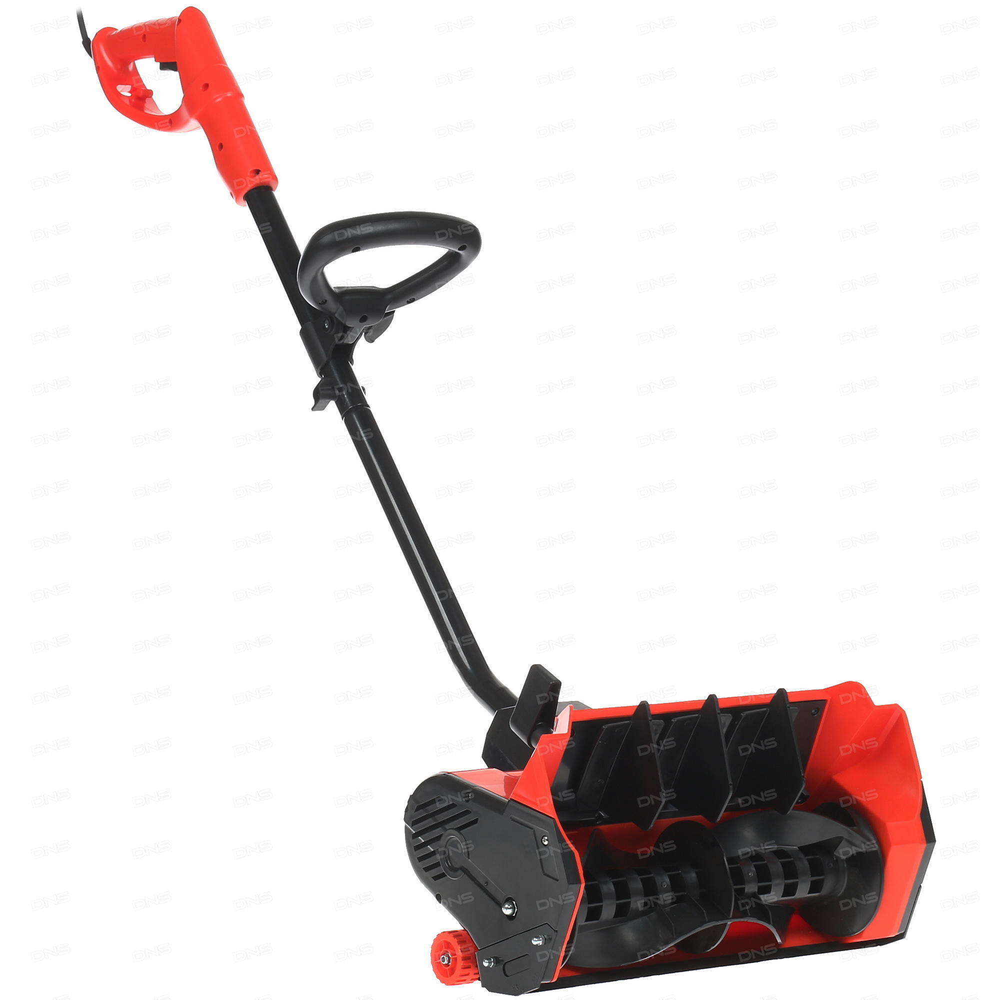

Снегоуборщик электрический DDE STE160
Описание товара
Снегоуборщик предназначен для уборки территорий от снега вокруг домов, гаражей, расчистки паркингов, дорожек, тротуаров в городе и на даче, а также других открытых пространств, применяется исключительно на ровных поверхностях с твёрдым покрытием.
Характеристики товара
| Тип | снегоуборщик | |
| Модель | DDE STE160 | |
| Основной цвет | чёрный, красный | |
| Система шнеков | одноступенчатая | |
| Дальность выброса снега | 3 м | |
| Мощность двигателя | 1600 Вт | |
| Количество колес | 2 |
Подробное описание товара
Снегоуборщик предназначен для уборки территорий от снега вокруг домов, гаражей, расчистки паркингов, дорожек, тротуаров в городе и на даче, а также других открытых пространств, применяется исключительно на ровных поверхностях с твёрдым покрытием.